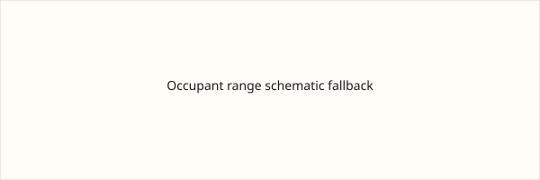

Ceuta · migración · 11 de octubre de 2026
La Policía Nacional completó el desalojo del asentamiento de migrantes en la explanada de El Guano en Ceuta.

Lo que coinciden los medios
La Policía Nacional inició este domingo, alrededor de las 8:00 horas, el desalojo del asentamiento situado en la explanada de la antigua fábrica de El Guano, el último de los grandes campamentos surgidos en Ceuta tras la entrada masiva de finales de julio. Participaron unidades de la UIP y otras fuerzas, con estimaciones de efectivos en torno a 300. Los adultos fueron trasladados en autobuses al Centro de Atención Temporal de Extranjeros (CATE) o al entorno fronterizo; los menores, a dependencias policiales para su identificación y posterior puesta a disposición de la Ciudad Autónoma. El operativo se desarrolla a poco más de 48 horas de la visita oficial de los Reyes Felipe VI y Letizia. Las estimaciones del número de personas que permanecían en el asentamiento oscilan entre unos 150 y más de 500 según los distintos reportes.
RTVE, EFE y otros medios coinciden en la hora aproximada de inicio, el carácter de último gran asentamiento y el destino diferenciado de adultos y menores.
Lo que es solo una cita
Las cifras exactas de trasladados varían entre crónicas locales y agencias; algunas hablan de “en torno a medio millar” y otras de “centenar y medio”. Esas diferencias reflejan conteos sobre el terreno o estimaciones previas, no un censo oficial único publicado. Las declaraciones de que muchos optaron por retornos voluntarios a Marruecos son reportes de testigos y agentes, no un registro administrativo completo.
Mecanismo que el lector necesita
Ceuta es una ciudad autónoma española en la costa norteafricana. Tras las entradas irregulares masivas de finales de julio, se formaron varios asentamientos improvisados en playas y explanadas. Operativos previos desalojaron los de Benítez y el Trampolín, trasladando a miles de personas a recursos de acogida o facilitando retornos. El Guano concentró a quienes quedaban. La separación de menores y adultos responde a competencias distintas: la protección de menores corresponde a la administración autonómica, mientras que la filiación y posibles solicitudes de asilo de adultos se gestionan en el CATE. El calendario de la visita real añade un factor de visibilidad pública al operativo, pero no altera el procedimiento legal de identificación.
Después del desalojo, parte de las personas se dispersan por la ciudad o por zonas de monte para evitar el traslado. Los reportes de limpieza de chabolas y de control marítimo complementario son medidas operativas estándar en este tipo de intervenciones. Las cifras finales de personas acogidas, retornadas o que permanecen en la calle aparecerán en balances posteriores de la Delegación del Gobierno o de la Ciudad Autónoma.
Lo que esta historia no es
No es un censo definitivo de migrantes que quedan en Ceuta. No es una valoración de la política migratoria española. La fotografía es una vista de la ciudad, no el momento del desalojo.

Artículos fuente y puntuaciones
Imágenes: fotografía de localización de Ceuta en Wikimedia Commons vía Special:FilePath. El pie indica que no es el evento. onerror al SVG comprometido. Sin atributo CORS.